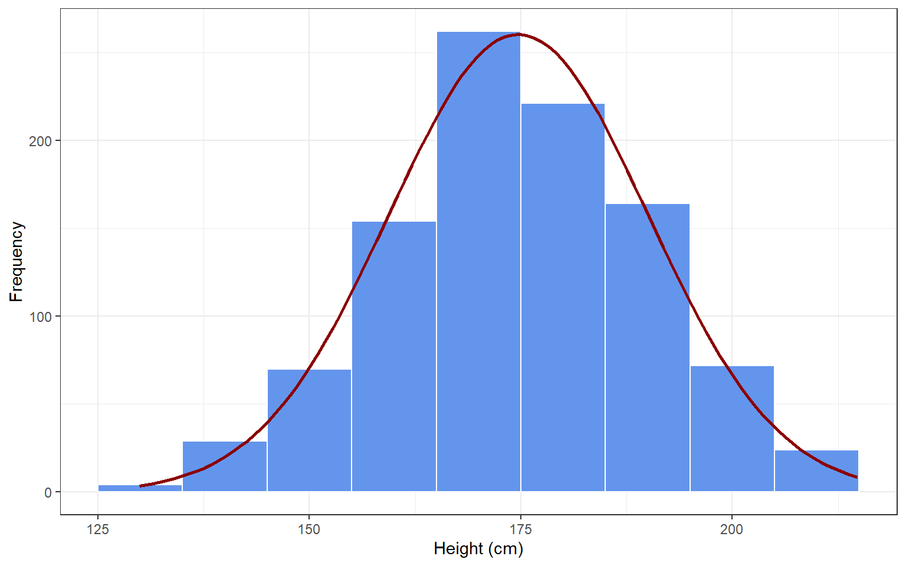
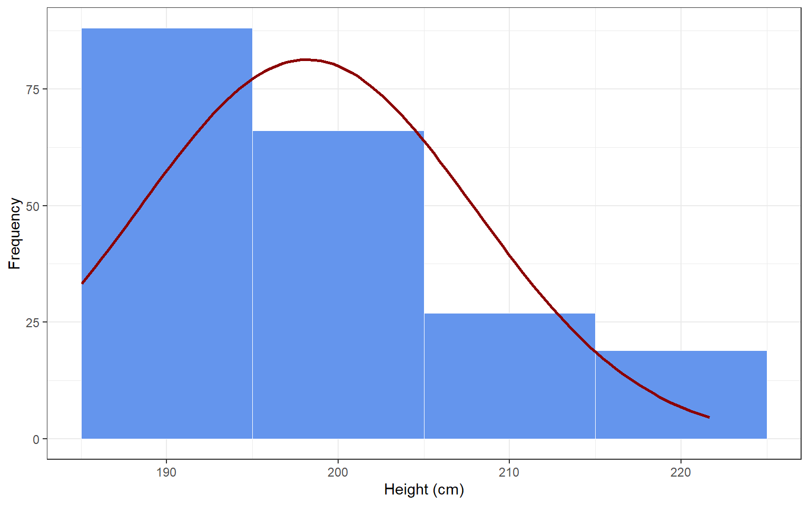
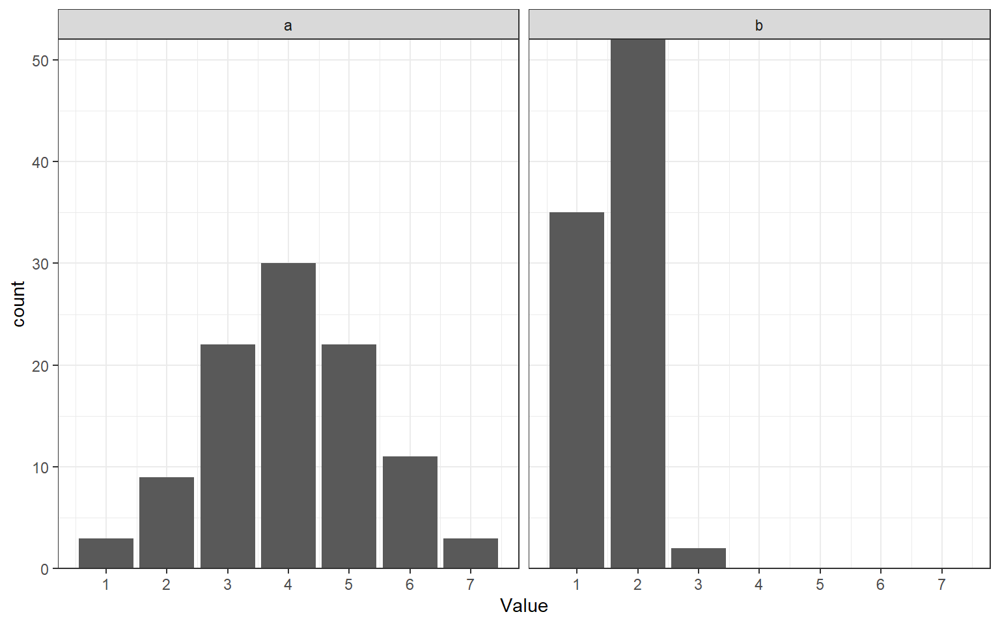

Every time we use a statistical model to describe data, we make certain simplifying assumptions. If these assumptions are met, the model is a good representation of the data (descriptive statistics), and we can make valid inferences about the population based on the model’s parameters (inferential statistics). However, when these assumptions are violated, the model is a bad descriptor of the data, and inferences based on the model can be misleading or difficult to interpret.
To de-mystify assumptions, let’s examine one of the simplest statistical models possible: the normal distribution. The normal distribution is a statistical model to describe the distribution of scores on a variable (or: in the population), and its two parameters are the mean and standard deviation. If I draw a random sample of 1000 participants from the population of the Netherlands, their observed heights might be distributed as in the histogram below. I could use the normal distribution as a model for these data, and it would do a pretty good job (see the red normal distribution). In this case, my assumption is that height is normally distributed around a mean\(\mu\)and with standard deviation\(\sigma\), or:
\[
\text{Height} \sim N(\mu, \sigma)
\]
If this assumption holds, the mean and standard deviations will be pretty good descriptive statistics of the distribution of data in the sample. If I assume that height is also normally distributed in the population, and that my sample is representative - then my sample statistics are also pretty good estimators for the population parameters.
set.seed(1)x <-rnorm(1000, mean =175, sd =15)outlrs <- (x <25| x >215)while(any(outlrs)){ x[which(outlrs)] <-rnorm(sum(outlrs), mean =175, sd =15) outlrs <- (x <25| x >215)}library(ggplot2)## parameters that will be passed to ``stat_function``n =length(x)mean =mean(x)sd =sd(x)binwidth =10# passed to geom_histogram and stat_functionset.seed(1)df <-data.frame(x = x)ggplot(df, aes(x = x, mean = mean, sd = sd, binwidth = binwidth, n = n)) +theme_bw() +geom_histogram(binwidth = binwidth, colour ="white", fill ="cornflowerblue", size =0.1) +stat_function(fun =function(x) dnorm(x, mean = mean, sd = sd) * n * binwidth,color ="darkred", size =1) +labs(x ="Height (cm)", y ="Frequency")
Warning: Using `size` aesthetic for lines was deprecated in ggplot2 3.4.0.
ℹ Please use `linewidth` instead.

Now imagine that I draw a convenience sample of 200 members of my local basketball association (figure below). Do you think I can assume that their heights will be normally distributed? Why (not)? Do you think these individuals will be representative of the Dutch population? Will they be representative of the population of Dutch basketball players? If the assumption that these scores are normally distributed is violated, then the mean and standard deviation of the normal distribution will be poor descriptive statistics. Moreover, these sample statistics will be poor estimators of the population parameters.
set.seed(2)x <-rnorm(200, mean =190, sd =15)outlrs <- (x <185| x >240)while(any(outlrs)){ x[which(outlrs)] <-rnorm(sum(outlrs), mean =175, sd =15) outlrs <- (x <185| x >240)}## parameters that will be passed to ``stat_function``n =length(x)mean =mean(x)sd =sd(x)binwidth =10# passed to geom_histogram and stat_functionset.seed(1)df <-data.frame(x = x)ggplot(df, aes(x = x, mean = mean, sd = sd, binwidth = binwidth, n = n)) +theme_bw() +geom_histogram(binwidth = binwidth, colour ="white", fill ="cornflowerblue", size =0.1) +stat_function(fun =function(x) dnorm(x, mean = mean, sd = sd) * n * binwidth,color ="darkred", size =1) +labs(x ="Height (cm)", y ="Frequency")

12.0.1 Assumptions for Linear Regression
The same principles apply to more complex models than the normal distribution - for example, linear regression. In fact, linear regression can be written as a normal distribution whose mean depends on the value of a predictor variable. If this equation says that height is normally distributed:
\[
\text{Height} \sim N(\mu, \sigma)
\]
Then this equation says that height is normally distributed with a mean value that depends on age:
\[
\text{Height}_i \sim N(\alpha + \beta*\text{Age}_i, \sigma)
\] Notice that the overall (population) mean of height \(\mu\) is now replaced with a linear formula with population intercept \(\alpha\) and effect of Age \(\beta\). Another way to rewrite this formula without changing the meaning is:
This is the familiar notation of a regression equation. There are two points here: one, regression can be written as an extension of the normal distribution by plugging a linear formula in the place of the distribution mean. This means that regression inherits the assumptions of the normal distribution (e.g., no outliers), and gains a few more because of the added linear formula. Two, all of the assumptions are right there, in the formula itself: the fact that we specify height as a linear function of age means that we assume linearity. The fact that we use a little subscript \(_i\) for height and age means that we assume independent observations from different individuals for these variables. The fact that we have one normal distribution for the error term \(\epsilon_i\) means that we do not expect the error distribution to vary at different values of the predictor, in other words, we expect homoscedasticity.
Below, we get deeper into the assumptions of linear regression, explains why each one matters, and shows how to check whether they are likely to hold in your data.
12.0.1.1 Independence of Observations
Linear regression assumes that every observation, or every row in the dataset, represents an independent observation, contributing unique information to the dataset. This means that observations should not be systematically related to each other. For example, participants should not be partners, friends, classmates, et cetera - any reason why participants might be more similar than randomly selected members of the population could introduce a violation of the assumption of independence.
Why it matters
When observations are clustered - for example, when data come from students in the same classroom, patients treated by the same clinician, or repeated measurements from the same individual - the assumption of independence is violated. In such cases, the residuals of these observations are correlated, which causes the model to underestimate the true variability, leading to overconfident conclusions.
How to check
Consider the study design: Were the data collected from naturally grouped or repeated units, such as individuals within teams, families, schools, or measured over time?
When it is violated
This assumption is likely to be violated when:
Observations are nested within a shared context (e.g., students within schools).
The same individual or unit appears multiple times in the dataset.
There is a known time-based or spatial structure to the data.
12.0.1.2 Correct Measurement Levels
Linear regression requires the outcome variable (Y) to have a continuous measurement level. This also follows from the linearity assumption: if we assume that an increase on X from 1 to 2 will have the same effect (regression slope) as an increase on X from 4 to 5, then that also means that Y must have a measurement level where the same distance has the same numerical value (interval or ratio). Examples of appropriate variables are test scores, height, or income. Predictors (X variables) can have any measurement level, but they must be encoded as continuous or binary (0 and 1-coded dummy variables). Some statistical software encodes nominal and ordinal variables as binary indicators behind the scenes, effectively doing this work for you.
Why it matters
If Y is nominal, it does not make sense to predict it numerically. If Y is ordinal, we cannot be sure that steps of equal numerical size have the same meaning. Sometimes a linear model works quite well for ordinal scales, but it is always important to check for indications of model violations when you use it for such variables.
How to check
First, review the codebook, metadata, or variable definitions in SPSS to confirm that:
The outcome (Y) is coded as a continuous numeric variable.
Categorical predictors are either dummy-coded or otherwise appropriately handled.
When it is violated
The assumption is violated when:
Y is nominal (categories like “red”, “green”, “blue”) or ordinal (e.g., Likert scales).
An ordinal X is treated as numeric without justification, leading the model to assume equal spacing between categories.
Note that the operationalization of a variable is not the only factor that matters; its true measurement level also matters. For example, if you want to measure height, you could put a mark on the doorpost and rate everyone taller than the mark as “tall”, and anyone shorter than the mark as “short” - but the fact that you operationalized height this way doesn’t negate the fact that it is inherently a continuous variable.
More pertinently: gender is often operationalized as binary. This does not mean that gender is binary; its true measurement level is more complex. If you are interested in gender as a social construct, then there are more then two discrete categories. If you are interested in gender for its biological aspects, then there is both nominal variability. Nominal variability includes aneuploidy of sex chromosomes, and continuous variability occurs in various biological aspects of male-ness and female-ness, like hormone balances and -sensitivities.
12.0.1.3 Linearity – the “straight-line” assumption
Linear regression assumes that the relationship between each predictor X and the outcome Y is linear, that is, that the same change in X corresponds to the same change in Y for all values of X. The slope \(\beta\), or its sample estimate \(b\), tells us how much Y is expected to increase (or decrease) for a one-unit increase in X, but this only holds if the relationship is approximately linear.
Why it matters
If the relationship is actually non-linear, fitting a straight line will misrepresent the nature or strength of the association. Remember Anscombe’s quartet in ?sec-anscombe. A straight line fitted to a pattern in data that, in reality/in the population, is non-linear (quadratic, S-shaped, etc) will result in inaccurate or meaningless slope estimates and misleading conclusions about the predictor’s effect.
How to check
Create a scatterplot of Y against each X variable.
Add a straight trend line (e.g., “fit line at total” in your software).
Visually assess whether the line aligns with the overall pattern of the data points.
When it is violated
Linearity is likely violated if the plotted points form a clear curve, wave, or other systematic pattern that deviates from a straight path.
Alternatively, outside the scope of this course:
Estimate a linear model
Estimate a model with a different functional form (e.g., quadratic)
Compare the fit of the models using the BIC model fit index (lower is better)
12.0.1.4 Normality of Residuals
As evident from the \(\epsilon_i \sim N(0, \sigma)\) part of the regression equation, linear regression assumes that the residuals, the differences between the observed and predicted values, are normally distributed.
Why it matters
When the residuals deviate strongly from normality (e.g., they are skewed or have heavy tails), inferences based on the regression model may be misleading. Standard errors and metrics derived from them, like p-values, and confidence intervals, depend on this assumption.
How to check
Save the residuals and inspect their distribution using a histogram or a Q–Q plot.
For very small datasets (e.g., N < 50), formal tests such as the Shapiro–Wilk test can be used to assess normality.
When it is violated
This assumption is often violated when:
The outcome variable is highly skewed or bounded
There are extreme values in the outcome that disproportionately influence the residuals.
The sample size is small and the residual pattern does not resemble a bell-shaped curve.
12.0.1.5 Homoscedasticity
The fact that linear regression has a single error term implies an assumption that the variance of the residuals remains constant across all levels of the predicted values. This condition, known as homoscedasticity (homo = equal, scedasticity = variance), implies that the model has equal predictive accuracy across the full range of the outcome.
Why it matters
When residuals fan out, contract, or otherwise vary as the predicted values increase, this is called heteroscedasticity (hetero = different, scedasticity = variability). In such cases, the standard errors may be inaccurate, which undermines the reliability of p-values and confidence intervals.
How to check
Save the residuals from the fitted model.
Create a scatter plot of residuals (Y-axis) and predicted values (X-axis).
Visually determine whether the spread of residuals appears approximately constant across the range of predicted values.
When it is violated
This assumption is violated when: - The residuals become more dispersed or more concentrated as the predicted value increases. - The residual-versus-predicted plot reveals a funnel-like or cone-shaped pattern rather than a uniform band. - The residuals shows any pattern, other than a random dot cloud.
12.0.1.6 No Outliers
The assumption of no outliers is related to the assumption of linearity and the assumptions of normal, homoscedastic residuals. An extreme case can distort slope estimates (as in Anscombe’s quartet, figure c) and standard errors, and consequently, confidence intervals and p-values which are based on those standard errors.
Why it matters
Outliers can pull the regression line toward themselves, leading to misleading interpretations. Even a single influential point can change the direction, strength, or significance of a predictor’s effect.
How to check
Calculate diagnostic statistics such as leverage, Cook’s distance, and standardized residuals to detect potential outliers.
When it is violated
This assumption may be violated when:
A case lies far from the bulk of the data on one or more predictors.
The residual for a single observation is large relative to others.
Diagnostic measures flag a case as both high-leverage and high-influence.
12.0.1.7 Reliable Predictors
In the regression equation, the outcome has an error term, \(\epsilon_i\). If the model makes imperfect predictions for any reason, these prediction errors contribute to the error term. One reason for prediction error is measurement error in the outcome. Note, however, that while the outcome has an error term - the predictor does not. This implies an assumption that predictor variables (X) are measured without error. Inaccurate or inconsistent measurement introduces noise, which can attenuate the estimated relationship between X and Y. As a result, regression coefficients may be biased toward zero, and the model may attribute true effects to random error.
Why it matters
When predictors are measured with error (unreliable), the estimated slopes become less trustworthy. Even in large samples, measurement error in X can severely compromise the interpretability of regression results, leading to underestimation of effect sizes and increased standard errors.
How to check
For predictors based on multiple items (e.g., survey scales), compute internal consistency (e.g., Cronbach’s alpha). Values below 0.70 often indicate problematic measurement.
If repeated measurements of the same predictor are available, examine the test–retest correlation. High correlation supports reliability.
When it is violated
This assumption is violated when: - A predictor contains high random measurement error. - Multi-item scales exhibit low internal consistency. - Temporal stability of repeated measures is weak (e.g., inconsistent responses across time).
12.0.1.8No Multicollinearity
As a preview of what is to come: it is possible to include more than one predictor in a regression model. This is called multiple regression, and it will be covered in Statistics 2. Multiple regression additionally assumes that each predictor contributes uniquely to the explanation of the outcome variable. When two or more predictors explain the same variance in the outcome, the model struggles to estimate their unique effects. This overlap in explained variance makes coefficient estimates unstable and difficult to interpret, and inflates the individual predictors’ standard errors.
Why it matters
Multicollinearity undermines the precision of regression coefficients. When predictors convey redundant information, the model’s ability to estimate each slope independently deteriorates. This can lead to wide confidence intervals, non-significant p-values, or coefficients with counterintuitive signs.
How to check
Examine the Variance Inflation Factor (VIF) for each predictor. A common guideline is that values above 5 may indicate multicolinearity, values above 10 indicate severe multicolinearity.
When it is violated
This assumption may be violated when:
Two predictors are strongly correlated (e.g., income and years of education).
More than two predictors explain the same variance in the outcome (e.g., mother’s income, father’s income, and family Socio-Economic Status might explain the same variance in children’s educational attainment)
VIF values are unusually high.
The inclusion of additional predictors drastically alters the estimated slopes or increases their standard errors.
12.0.1.9 Putting It All Together
Before interpreting regression results, it is essential to check for evidence of violations of assumptions. If the assumptions are violated, interpretation of the results might not be straightforward. Note, however, that assumption checks are subject to the same caveats as other statistical inferences:
Assumptions are statements about the population; even if they appear to be violated in the sample, they might be met in the population
Consequently, it is possible to draw false positive (incorrectly concluding that an assumption is violated, while in reality it is not) or false negative (incorrectly concluding that an assumption is not violated, when in reality it is) conclusions about assumptions
Making data-driven analysis decisions incurs researcher degrees of freedom (see the chapter on questionable research practices). You run the risk of overfitting (customizing) your analysis so much to the sample at hand that it no longer generalizes well to the general population, or other samples from that population.
None of this diminishes the importance of checking assumptions, it is merely a call to exercise critical thinking when doing so. For example, regression assumes that the dependent variable is normally distributed. If your dependent variable is a Likert-type scale, sometimes, you may get away with making this assumption (figure ?fig-figviolate panel a below). Nevertheless, you should discuss this potential violation of the assumption of normality in the Discussion of your paper or report. However, if you notice after data collection that your dependent variable is distributed as in figure b below, the assumption of normality is so eggregiously violated that analysis results are probably meaningless. In this case, you might still analyze the results as planned - but that analysis will likely be meaningless. You might want to present a second analysis that treats the outcome as ordinal (which is possible, but outside the scope of this course), and emphasize that this was a data-driven analysis decision.
In sum:
Always check assumptions
Always report the result of assumption checks and discuss (in the Discussion) how potential violation might affect your conclusions
In case of strong evidence of violations, you might report a secondary analysis that is robust to the violation of the assumption, but make it clear that this analysis was performed after seeing the data.
Optionally, compare the results of both the planned analysis and the robust analysis. If the conclusions are the same (e.g., both analyses provide results consistent with your hypothesis), this is reassuring.
Warning: Removed 11 rows containing non-finite outside the scale range
(`stat_count()`).

Figure a shows a Likert-type scale that is approximately normally distributed. Figure b shows a Likert scale with extreme censoring
Visual diagnostics – Begin with graphical checks for linearity, constant variance, outliers, and normality of residuals. Plots often reveal violations at a glance.
Statistical diagnostics – Follow up with numerical checks, such as the Variance Inflation Factor (VIF) for multicollinearity and formal tests for heteroskedasticity or autocorrelation when appropriate.
Assessment of model structure – Consider whether the data meet requirements for independence and correct scale of measurement.
12.1 Formative Test
A formative test helps you assess your progress in the course, and helps you address any blind spots in your understanding of the material. If you get a question wrong, you will receive a hint on how to improve your understanding of the material.
Complete the formative test ideally after you’ve seen the lecture, but before the lecture meeting in which we can discuss any topics that need more attention
Question 1
Which statement best captures the linearity assumption in OLS regression?
Question 2
Homoscedasticity means:
Question 3
A residuals versus predicted plot shows a clear funnel shape. Which assumption is most likely violated?
Question 4
Why does normality of residuals matter most for small samples in OLS?
Question 5
Your data consist of students nested within classrooms but you fit a single level OLS model that treats all rows as independent. Which assumption is threatened?
Question 6
Two predictors are highly correlated. What is the most common consequence for the regression coefficients?
Question 7
Which outcome variable violates the correct scale of measurement assumption for standard OLS regression?
Question 8
What is the typical effect of measurement error in a predictor on its estimated slope in OLS?
Question 9
You see a systematic curve in the residuals versus predicted plot. Which assumption is most suspect?
Question 10
Which statement about outliers and influence in OLS is correct?
Question 1
Linearity is about the average of Y at each X forming a straight line. The other options describe different assumptions.
Question 2
Homoscedasticity is constant spread of residuals across the range of fitted values.
Question 3
A funnel pattern indicates changing residual variance across fitted values.
Question 4
With small samples inference for slopes uses normality. In large samples asymptotics help.
Question 5
Clustering creates correlated errors. Rows are not independent.
Question 6
High correlation among predictors creates multicollinearity and unstable estimates.
Question 7
OLS assumes a continuous outcome. A binary outcome calls for a different model.
Question 8
Classical measurement error in X attenuates the slope.
Question 9
A patterned residual plot suggests a wrong functional form. The relation is not linear.
Question 10
Influence depends on leverage and residual. Such points can change slopes and even signs.
12.2 Tutorial
12.2.1 Before you start
In each exercise, fit an OLS model with y as the outcome and the listed predictors.
Steps: 1) Fit OLS as in Assignment 1 and save ZRESID and ZPRED.
2) Graphs > Legacy Dialogs > Scatter/Dot > Simple Scatter
- X axis: ZPRED; Y axis: ZRESID.
Questions:
Do residuals show roughly constant spread across predicted values, or a cone/funnel?
Steps: 1) Analyze > Correlate > Bivariate
- Inspect correlations among x1, x2, x3.
2) Analyze > Regression > Linear
- y on x1 x2 x3
- Statistics: Collinearity diagnostics, Estimates.
Questions:
Are any predictor pairs highly correlated in the correlation matrix?
What are the VIF and Tolerance values for each predictor?
Do the signs and standardized Betas align with the simple correlations, or do you see suppression patterns?
What to look for:
VIF substantially above 5 (or Tolerance, which is \(\frac{1}{VIF}\), below .20) suggests collinearity.
Large divergence between simple r and Beta can signal overlap among predictors.
12.3 Assignment 7 — Putting it together (choose two datasets)
Files: pick any two from the set
Task:
For each dataset, run the standard diagnostic workflow from Assignment 1. - Summarize, in a short paragraph per dataset, which assumptions are reasonably met and which are doubtful, citing the specific plot or statistic you used.
Reminder:
Focus on diagnosis only. Do not apply remedies or re-specify models here.